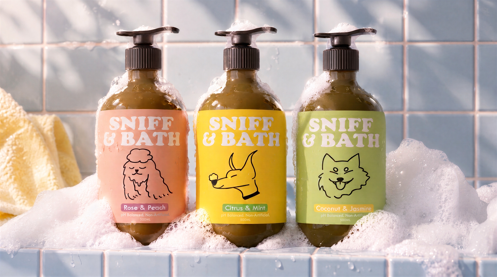
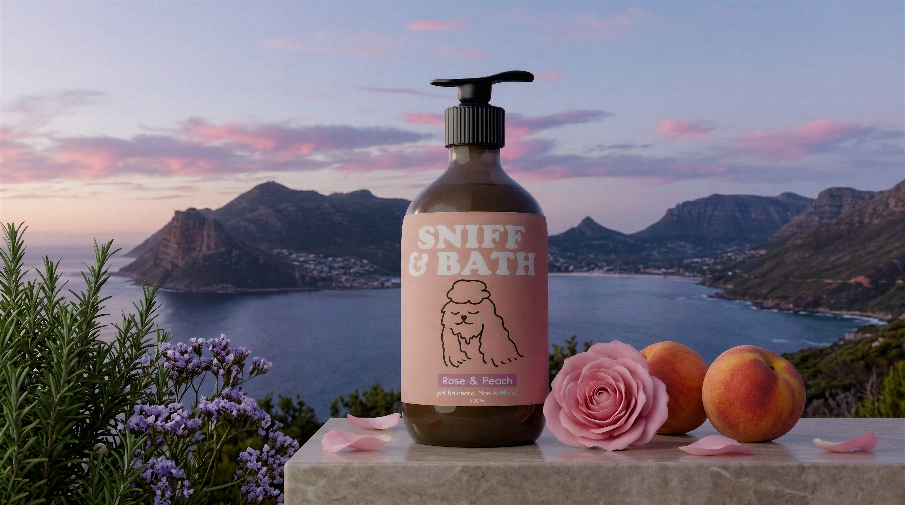
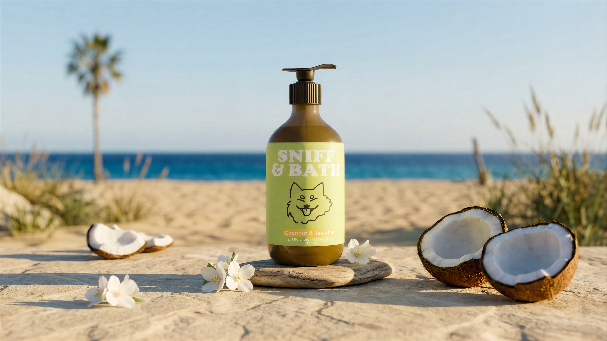
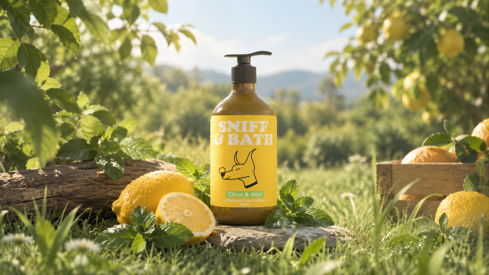

SNIFF & BATHDOG SHAMPOO · BRAND VISUALS
↓
Fresh, Fluffy,
Formula Friendly.
Sniff & Bath is a dog shampoo brand designed with sensitive dogs in mind. It combines gentle cleansing with a variety of refreshing scents, giving pet owners the freedom to choose the perfect fragrance for their furry companions.
With a fresh, playful visual identity, the brand makes everyday bathing feel gentle, enjoyable, and full of personality.
TOOLS Adobe Photoshop · After Effects · Gemini 3.5 · ComfyUI · NanoBanana
PRODUCT VISUALSSCENT STUDIES · 01—04


